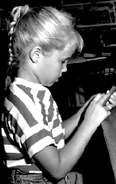
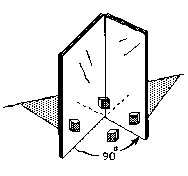

Don's worksheet book includes some science from which
young people obtain mathematics: 
1. Kirsten, then age 8 at left, found the ratio of the (surface area/ volume) of
rods, which led to an infinite sequence and why rats are nocturnal animals. (Ch.
6)
2. Studies of the growth of the chambered Nautilus by students are reported (the
shell on the first page of Don's web site is a copy an original watercolor
painting by Don and his logo). (Ch. 6)
3. Students study phyllotaxis or the leaf arrangements on a pineapple and
sunflower stalk leading to the Fibonacci numbers, ratios, infinite sequences,
and the Golden Mean. (Ch. 7) 
4. The reflection of light using hinged-mirrors leads to a quadratic function
which is graphed; students have drawn the light rays to show how the different
images in the mirrors are obtained. (Ch. 6)
5. Students measure the length of wire and resistance, then graph the data and
find a rule for the relationship. (Ch. 6)
6. Young people find the slope of stairs, the IL landscape and Mt. Washington in
New Hampshire, from topographic maps. (Ch. 14)
7. Using a recording timer, students study the distance, velocity, and
acceleration of a falling object. (Ch. 14)
8. Students study conic sections as the flashlight shines on the table.
9. Students study the shapes of soap bubbles in tetrahedrons and
cubes, and using tacks between two glass plates. They measure the distances of
the shortest paths between the tacks. They also make their own shapes to study
the bubbles. See "Patterns in Nature" by Peter Stevens.
10. Young people work on transformations with matrices, with applications to
the nature of differences in fish and animals as well as in simulation of
airplane flight. See Don's book "Changing Shapes With Matrices" and
"On Growth and Form" by D'Arcy Thompson, Cambridge U Press; 1917
To download
Don's materials
Mathman home